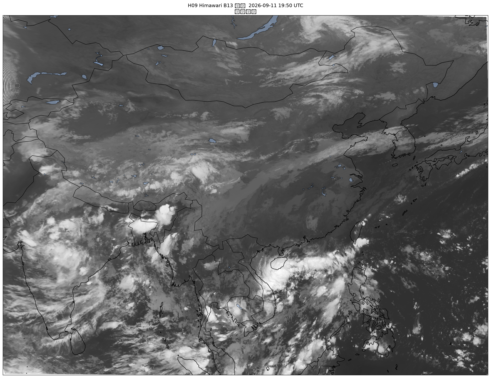
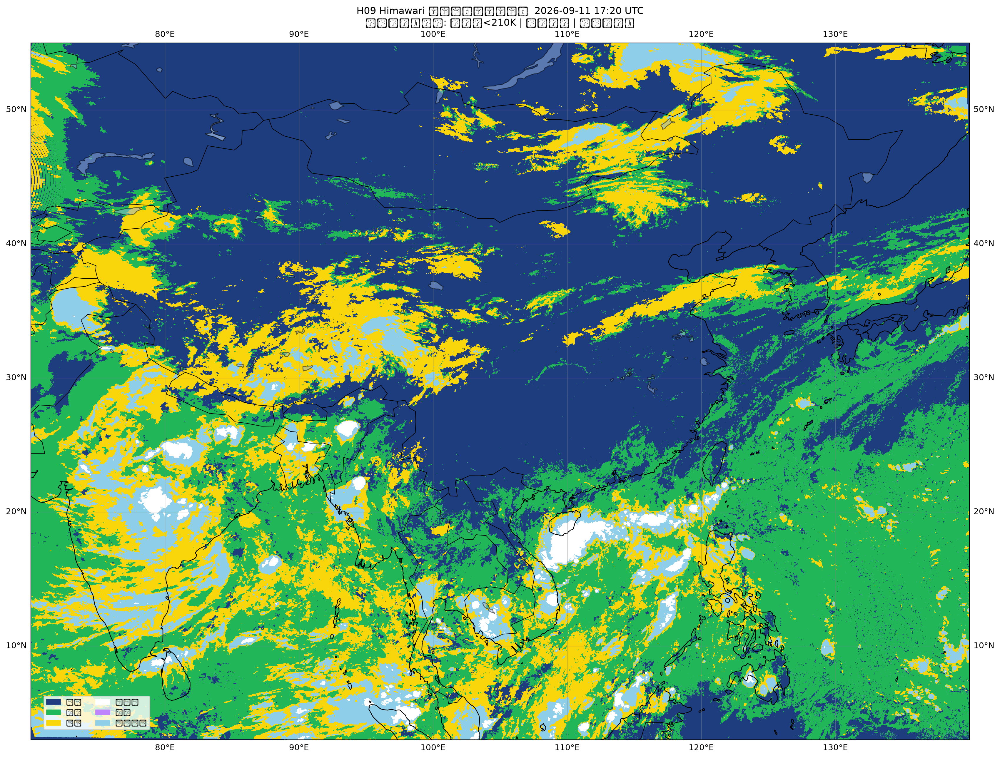
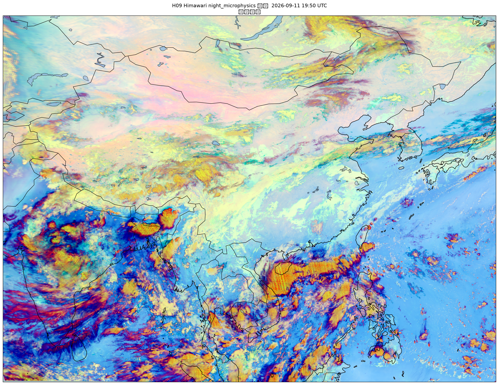

Himawari-9 · 红外监测 · 实时云分类
东亚
云图观测台
基于葵花-9（Himawari-9/AHI）红外与微物理通道，参考 JMA HCAI（高分辨率云分析信息）算法，自动生成最新红外云图与云分类图（8 种类型：晴空、层云/雾、层积云、积云、中云、深对流、卷云、层状高云）。数据来源：NOAA 公共 AWS S3。
LIVE 自动更新
观测
UTC
北京
B13 · 11µm
红外云图
IR LATEST
AWAITING FRAME

红外 B13 10.4µm 亮温
--
CLOUD TYPE
云类型分类
TYPE LATEST
AWAITING FRAME

参考 HCAI 分类 · 低云分 St/Sc/Cu
--
🔥 SUNSET
火烧云预测
FIRE CLOUD
查询
输入城市名开始查询火烧云预测
基于 Himawari 云分类 + 几何光学模型（火烧云定量预报速成）
--
NM · RGB
夜间微物理合成
NIGHT MICROPHYSICS
AWAITING FRAME

RGB：R=BTD
B15-B13
G=BTD
B13-B07
B=BT13 · JMA 雾监测技术
--
晴空
层云/雾
层积云
积云
中云
深对流
卷云
层状高云